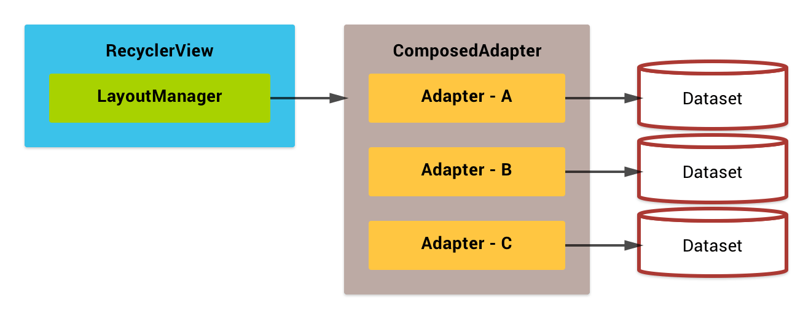

ComposedAdapter
The ComposedAdapter is an adapter which aggregates multiple adapters into one.

dataSet = new DataSet();
composedAdapter.addAdapter(new AdapterA(new DataSet()));
composedAdapter.addAdapter(new AdapterB(new DataSet()));
composedAdapter.addAdapter(new AdapterC(new DataSet()));Methods
ComposedChildAdapterTag ComposedAdapter.addAdapter(RecyclerView.Adapter adapter)ComposedChildAdapterTag ComposedAdapter.addAdapter(RecyclerView.Adapter adapter, int position)boolean ComposedAdapter.addAdapter(ComposedChildAdapterTag tag)
The ComposedAdapter can hold the same child adapter instance multiple times like this;

dataSet = new DataSet();
adapterA = new AdapterA(dataSet);
composedAdapter.addAdapter(adapterA);
composedAdapter.addAdapter(adapterA);
adapterA2 = new AdapterA(dataSet);
composedAdapter.addAdapter(adapterA2);Item position handling#
The ComposedAdapter calls each child adapters as segment, also child adapter's local item position are called as offset.

Methods
int ComposedAdapter.getSegment(ComposedChildAdapterTag tag)long ComposedAdapter.getSegmentedPosition(int flatPosition)int ComposedAdapter.extractSegmentPart(long segmentedPosition)int ComposedAdapter.extractSegmentOffsetPart(long segmentedPosition)
Item ID and ViewType handling#
When merging adapters, we must take care about item IDs. They have to be unique in entire the dataset, but the problem is child datasets may contains the duplicated IDs. The ItemIdComposer is used to manage this problem.
ItemIdComposer#
This utility class provides several static methods to handle the packed item ID value.
Item IDs are expressed by 64 bits length integer in RecyclerView, so it can be embed multiple information by using bit operation technique. ItemIdComposer divides 64 bits into four chunks; view type segment, group ID, child ID and reserved bit.
| Bits | Usage |
|---|---|
| bit 63 | Reserved |
| bit 62-56 | View type segment |
| bit 55-28 | Group ID |
| bit 27-0 | Child ID |
Methods
long ItemIdComposer.composeSegment(int segment, long wrappedId)int ItemIdComposer.extractSegmentPart(long composedId)long ItemIdComposer.extractExpandableGroupIdPart(long composedId)long ItemIdComposer.extractExpandableChildIdPart(long composedId)long ItemIdComposer.extractWrappedIdPart(long composedId)boolean ItemIdComposer.isExpandableGroup(long composedId)long ItemIdComposer.composeExpandableChildId(long groupId, long childId)long ItemIdComposer.composeExpandableGroupId(long groupId)
ItemViewTypeComposer#
Item view type has similar problem like item ID. The ItemViewTypeCompser manages packed item view type value that ItemIdComposer doing it for item ID.
Item view types are expressed by 32 bits integer in RecyclerView, and ItemViewTypeCompser divides it into three chunks; expandable group flag, view type segment and wrapped view type code.
| Bits | Usage |
|---|---|
| bit 31 | Expandable group flag (1: expandable group / 0: normal item) |
| bit 30-24 | View type segment |
| bit 27-0 | Wrapped view type code |
Methods
int ItemViewTypeComposer.composeSegment(int segment, int wrappedViewType)int ItemViewTypeComposer.extractSegmentPart(int composedViewType)int ItemViewTypeComposer.extractWrappedViewTypePart(int composedViewType)boolean ItemViewTypeComposer.isExpandableGroup(int composedViewType)
How to migrate WRAPPED adapter?#
Need to tweak several thing in your adapter implemtation because wrapper adapter modifies item position, item ID and item view type.
If using Adapter.getAdaperPosition() / Adapter.getLayoutPosition())#
Use `WrapperAdapterUtils.
@Overfides
void onClick(View v) {
RecyclerView rv = RecyclerViewAdapterUtils.getParentRecyclerView(v);
RecyclerView.ViewHolder vh = rv.findContainingViewHolder(v);
int rootPosition = vh.getAdapterPosition();
if (rootPosition == RecyclerView.NO_POSITION) {
return;
}
// need to determine adapter local position like this:
RecyclerView.Adapter rootAdapter = rv.getAdapter();
int localPosition = WrapperAdapterUtils.unwrapPosition(rootAdapter, this, rootPosition);
Item item = mItems.get(localPosition);
...
}If using ViewHolder.getItemViewType()#
Use ItemViewTypeComposer.extractWrappedViewTypePart().
@Overfides
void onClick(View v) {
RecyclerView.ViewHolder vh = recyclerView.findContainingViewHolder(v);
int rawViewType = vh.getItemViewType();
int viewType = ItemIdComposer.extractWrappedIdPart(rawViewType);
// use "viewType" here to determine which type of item is clicked
...
}If using ViewHolder.getItemId()#
Use ItemIdComposer.extractWrappedIdPart().
@Overfides
void onClick(View v) {
RecyclerView.ViewHolder vh = recyclerView.findContainingViewHolder(v);
long rawId = vh.getItemId();
long id = ItemIdComposer.extractWrappedIdPart(rawId);
// use "id" here to determine which item is clicked
...
}If your adapter overrides optional methods of RecyclerView.Adapter#
Implement WrappedAdapter interface and use the viewType parameter instead of ViewHolder.getitemViewType(), if your adapter overrides these methods listed below.
onViewAttachedToWindow()onViewDetachedFromWindow()onViewRecycled()onFailedToRecycleView()
class MyInnerAdapter<VH> implements WrappedAdapter<VH> {
// the following four methods are provided by WrappedAdapter interface
@Overrides
void onViewAttachedToWindow(VH holder, int viewType) {
}
@Overrides
void onViewDetachedFromWindow(VH holder, int viewType) {
}
@Overrides
void onViewRecycled(VH holder, int viewType) {
}
@Overrides
boolean onFailedToRecycleView(VH holder, int viewType) {
}
// proxy to WrappedAdapter's methods
@Overrides
void onViewAttachedToWindow(VH holder) {
onViewAttachedToWindow(holder, holder.getItemViewType());
}
@Overrides
void onViewDetachedFromWindow(VH holder, int viewType) {
onViewDetachedFromWindow(holder, holder.getItemViewType());
}
@Overrides
void onViewRecycled(VH holder, int viewType) {
onViewRecycled(holder, holder.getItemViewType());
}
@Overrides
boolean onFailedToRecycleView(VH holder, int viewType) {
onFailedToRecycleView(holder, holder.getItemViewType());
}
}